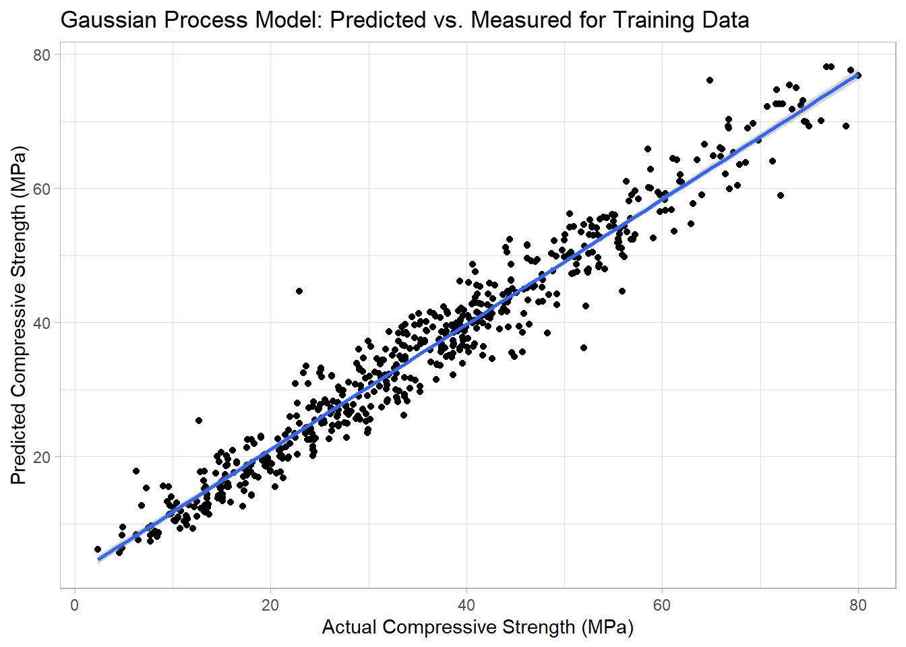
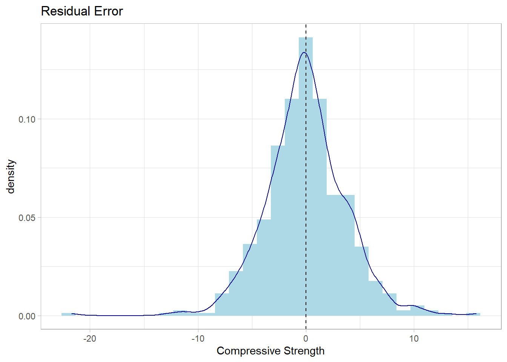
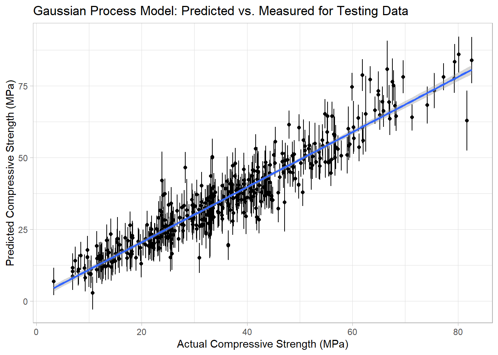

filename <- "Concrete_Data.xls"
folder <- "./data/"
numberCols <- 9 #total number of columns in spreadsheet
colTypes <- rep("numeric", numberCols)
concrete_tbl <- read_excel(path = paste0(folder, filename), col_types = colTypes)
concrete_tbl <- concrete_tbl %>%
rename(cement = starts_with("Cement")) %>%
rename(blast_furnace_slag = starts_with("Blast")) %>%
rename(fly_ash = starts_with("Fly Ash")) %>%
rename(water = starts_with("Water")) %>%
rename(superplasticizer = starts_with("Super")) %>%
rename(coarse_aggregate = starts_with("Coarse")) %>%
rename(fine_aggregate = starts_with("Fine")) %>%
rename(age = starts_with("Age")) %>%
rename(compressive_strength = starts_with("Concrete"))Revisiting the Gaussian Process Model for the Concrete Dataset
Posted on August 16, 2022
I have discovered a couple of improvements to the Gaussian Process model I first built for the Concrete dataset. First, I found that scaling both the predictors and the target is good practice for a Gaussian Process model. Without scaling, the GaussianProcessRegressor was having difficulty in converging to an optimized model for different types of kernels and kicking out warnings to this effect. In addition, I added a permutation analysis to the model to better understand the importance of the different predictors.
Loading the data into R
Here I am reusing the code from previous analyses on the Concrete dataset. The column names needed to be renamed so that they are more manageable for further data manipulations.
Initialize the Python environment
The reticulate library has been already loaded (not shown). We want to use Python packages next so the following code activates the correct Python environment.
use_condaenv("py3.8", required = TRUE)
py_config()python: C:/miniconda/envs/py3.8/python.exe
libpython: C:/miniconda/envs/py3.8/python38.dll
pythonhome: C:/miniconda/envs/py3.8
version: 3.8.13 | packaged by conda-forge | (default, Mar 25 2022, 05:59:45) [MSC v.1929 64 bit (AMD64)]
Architecture: 64bit
numpy: C:/miniconda/envs/py3.8/Lib/site-packages/numpy
numpy_version: 1.22.4
NOTE: Python version was forced by use_python functionImport the Python libraries
import pandas as pd
import numpy as np
#Pre-processing
from sklearn.model_selection import train_test_split
from sklearn.preprocessing import StandardScaler
#Gaussian process model
from sklearn.gaussian_process import GaussianProcessRegressor
from sklearn.gaussian_process.kernels import RBF, ConstantKernel, WhiteKernel
import sklearn.metrics as metrics##Building the Gaussian Process Model
In general, the Sci-kit learn models require the independent (a.k.a. predictor) variables and dependent (a.k.a. target) variables to be in separate dataframes. By convention, the predictors are in X and the target is in y. Using the StandardScaler requires a conversion from a dataframe to a numpy array using .values. Next, we split into train and test datasets.
X = r.concrete_tbl.drop(['compressive_strength'], axis=1).values
y = r.concrete_tbl['compressive_strength'].values
X_train, X_test, y_train, y_test = train_test_split(X,y, test_size = 0.4, random_state = 10)Here, I add the centering and scaling of the predictors and target using StandardScaler. The target variable needs to be converted to a single column using .reshape(-1,1).
scaler = StandardScaler()
target_scaler = StandardScaler()
X_train_scale = scaler.fit_transform(X_train)
y_train_scale = target_scaler.fit_transform(y_train.reshape(-1,1))kernel = ConstantKernel() * RBF() + WhiteKernel()
gp_model = GaussianProcessRegressor(kernel=kernel, n_restarts_optimizer = 5)
gp_model.fit(X_train_scale, y_train_scale)GaussianProcessRegressor(kernel=1**2 * RBF(length_scale=1) + WhiteKernel(noise_level=1),
n_restarts_optimizer=5)In a Jupyter environment, please rerun this cell to show the HTML representation or trust the notebook. On GitHub, the HTML representation is unable to render, please try loading this page with nbviewer.org.
GaussianProcessRegressor(kernel=1**2 * RBF(length_scale=1) + WhiteKernel(noise_level=1),
n_restarts_optimizer=5)gp_model.kernel_2.88**2 * RBF(length_scale=2.77) + WhiteKernel(noise_level=0.0679)You need to reverse the scaling in order to compare with the original values and more easily assess the metrics.
#Model Evaluation and error calculations
y_pred_tr_scale, y_pred_tr_std_scale = gp_model.predict(X_train_scale, return_std=True)
y_pred_tr = target_scaler.inverse_transform(y_pred_tr_scale.reshape(-1,1))
print('R^2 =',metrics.r2_score(y_train, y_pred_tr))R^2 = 0.9510564491627164print('Adjusted R^2 =',1 - (1-metrics.r2_score(y_train, y_pred_tr))*(len(y_train)-1)/(len(y_train)-X_train.shape[1]-1))Adjusted R^2 = 0.9504135125343119print('MAE =',metrics.mean_absolute_error(y_train, y_pred_tr))MAE = 2.761809257737739print('MSE =',metrics.mean_squared_error(y_train, y_pred_tr))MSE = 13.81069046994497print('RMSE =',np.sqrt(metrics.mean_squared_error(y_train, y_pred_tr)))RMSE = 3.716273734528307We can visualize the predicted vs. actual (measured) compressive strengths in the figure below.
pred_train <- tibble(y_train = py$y_train, y_pred_tr = as.vector(py$y_pred_tr))
ggplot(data = pred_train, aes(x = y_train, y = y_pred_tr)) +
geom_point() +
geom_smooth(method = "lm") +
labs(title = "Gaussian Process Model: Predicted vs. Measured for Training Data",
x = "Actual Compressive Strength (MPa)",
y = "Predicted Compressive Strength (MPa)") +
theme_light()`geom_smooth()` using formula 'y ~ x'
The distribution of model residuals should ideally be centered around 0 and normally distributed. The residuals for the Gaussian Process Model are shown in the figure below.
pred_train %>%
mutate(resid_tr = y_train - y_pred_tr) %>%
ggplot(aes(x = resid_tr)) +
geom_histogram(aes(y = ..density..), fill="lightblue") +
geom_density(color="darkblue") +
geom_vline(aes(xintercept = mean(resid_tr)), linetype = "dashed") +
labs(title = "Residual Error",
x = "Compressive Strength") +
theme_light()`stat_bin()` using `bins = 30`. Pick better value with `binwidth`.
The residuals are centered around zero and about evenly distributed between negative and positive deviations. A few outliers are evident especially in the prediction beyond -20 MPa. The model performance on the training data was deemed acceptable to proceed to evaluation of the test data.
Evaluation of the GP model predictions on the testing data
You need to scale the test data before prediction using the same scaling used on the training dataset.
X_test_scale = scaler.transform(X_test)
y_pred_te_scale, y_pred_te_std_scale = gp_model.predict(X_test_scale, return_std=True)
y_pred_te = target_scaler.inverse_transform(y_pred_te_scale.reshape(-1,1))
y_pred_te_std = y_pred_te_std_scale * target_scaler.scale_
tpred_gp = metrics.r2_score(y_test, y_pred_te)
print('R^2:', tpred_gp)R^2: 0.8917692463549082print('Adjusted R^2:',1 - (1-metrics.r2_score(y_test, y_pred_te))*(len(y_test)-1)/(len(y_test)-X_test.shape[1]-1))Adjusted R^2: 0.8896207450418543print('MAE:',metrics.mean_absolute_error(y_test, y_pred_te))MAE: 4.019689693177419print('MSE:',metrics.mean_squared_error(y_test, y_pred_te))MSE: 29.627775450956666print('RMSE:',np.sqrt(metrics.mean_squared_error(y_test, y_pred_te)))RMSE: 5.443140219667014The model performance was a bit worse for the testing data as compared to the training data. One of the advantages of the Gaussian Process model is the estimation of uncertainty in the prediction. In the figure below, the predicted vs. measured compressive strengths for the test dataset are displayed along with error bars for +/- 1 standard deviation.
pred_test <- tibble(y_test = py$y_test, y_pred_te = as.vector(py$y_pred_te), y_pred_te_std = py$y_pred_te_std)
ggplot(data = pred_test, aes(x = y_test, y = y_pred_te)) +
geom_point() +
geom_errorbar(aes(ymin = y_pred_te - y_pred_te_std, ymax = y_pred_te + y_pred_te_std)) +
geom_smooth(method = "lm") +
labs(title = "Gaussian Process Model: Predicted vs. Measured for Testing Data",
x = "Actual Compressive Strength (MPa)",
y = "Predicted Compressive Strength (MPa)") +
theme_light()`geom_smooth()` using formula 'y ~ x'